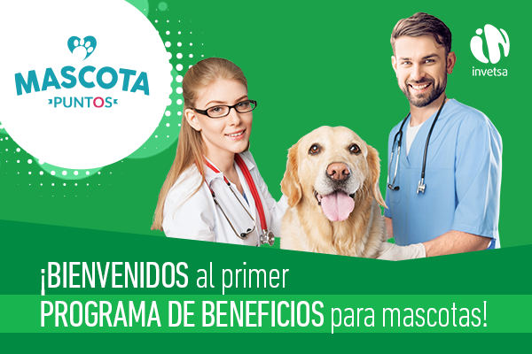

|  |
|
Estimado @Nombre Aprovechamos este medio para saludarte y esperamos que tu familia y tú se encuentren bien de salud. En Invetsa queremos agradecer tu fidelidad, dándote la bienvenida al exclusivo programa Mascota Puntos Por medio de la plataforma www.mascotapuntos.com podrás hacer uso de múltiples beneficios, canjeando una gran variedad de productos para tu negocio o tu hogar. Para ingresar por primera vez, solo debes digitar tu número de RUC @XXXXX como usuario y contraseña. Luego es muy importante que cambies la contraseña en la sección "tu perfil” Mensualmente estaremos añadiendo los Mascota Puntos a tu cuenta, según la compra que realices de nuestros productos. Significa que, a más compras, mayores serán los beneficios que podrás canjear. Para saber más del programa, ingresa a términos y condiciones ¡Disfruta de todos los beneficios que Mascota Puntos trae para ti! Para más información contacta a tu consultor técnico comercial asignado. Quedamos a tu entera disposición. Atentamente, Yuriko Ysa Moromisato Gerente de Animales de Compañía |